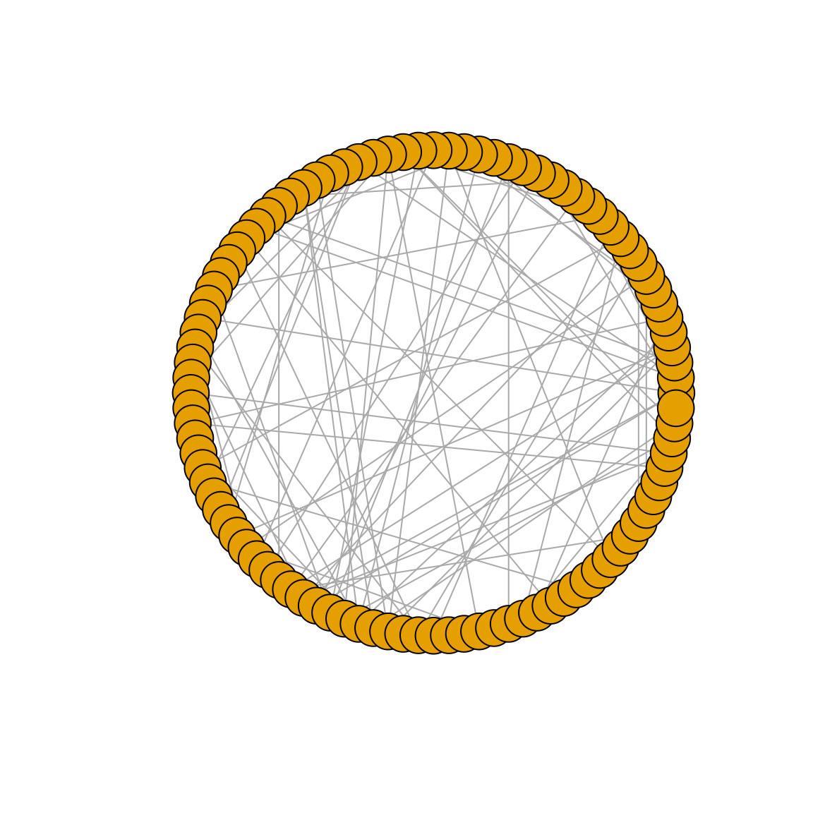
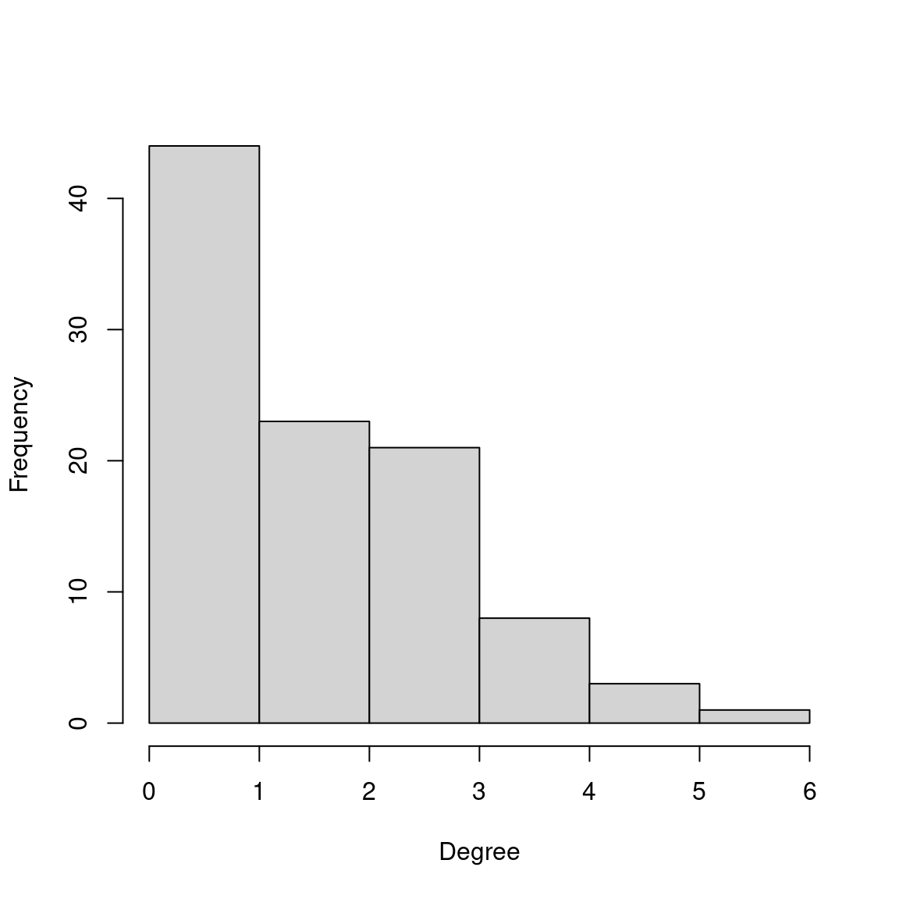
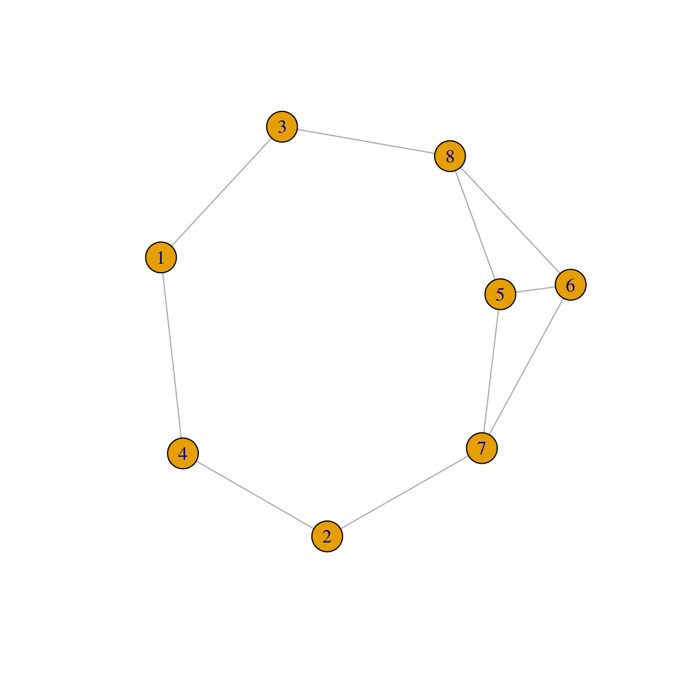
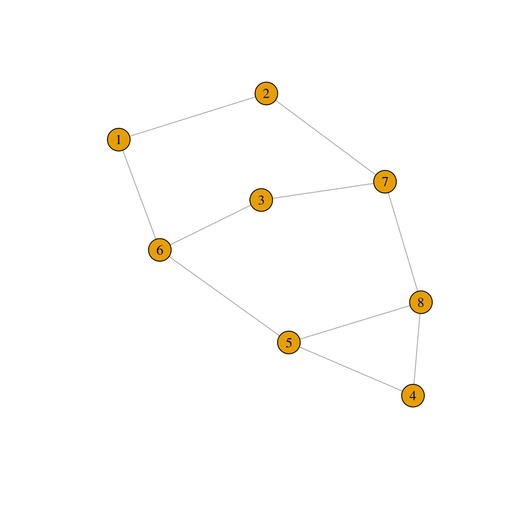
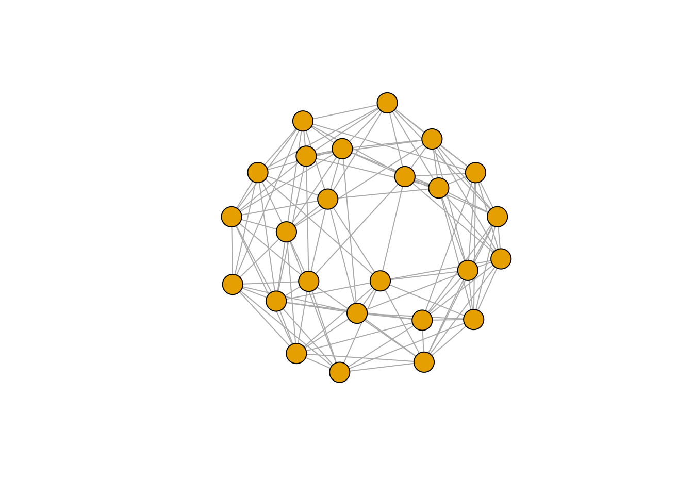
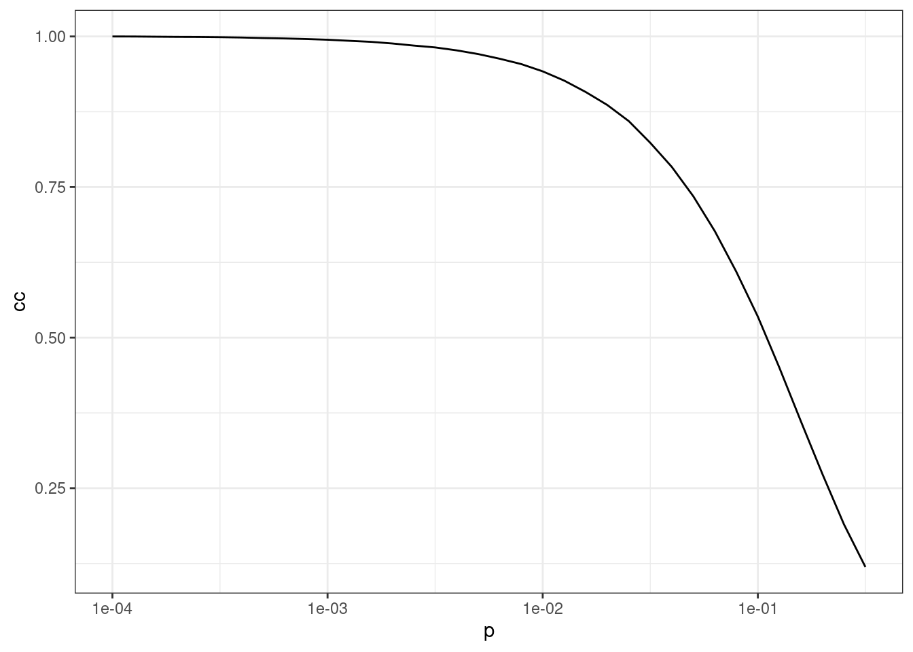
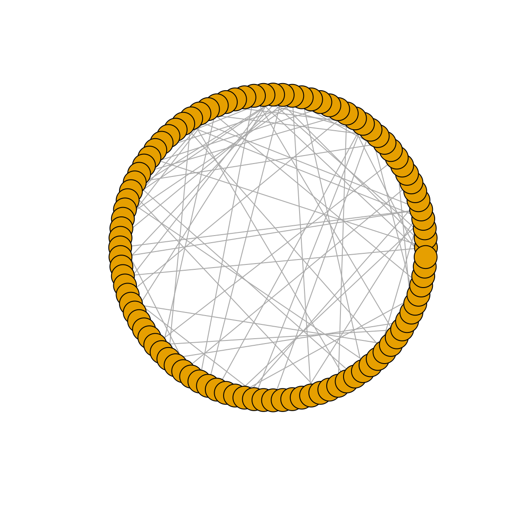
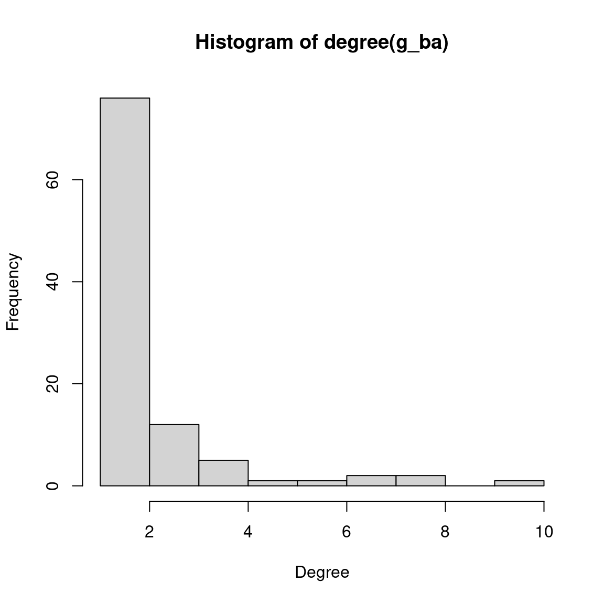
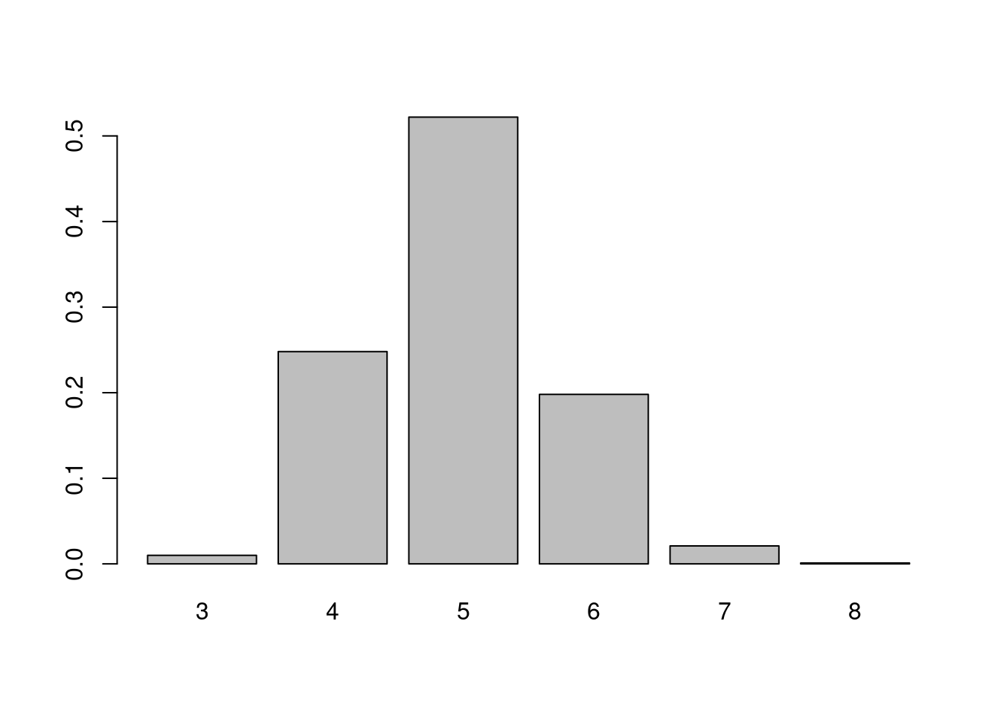

set.seed(123) # for reproducibility
# Load required packages
library(here)
library(igraph)
library(igraphdata)
library(tidyverse)3 Network modelling and hypothesis testing
In this lesson, you will learn about common mathematical models to describe graphs and how to use them to analyze properties of your own network data. At the end of this lesson, you will be able to:
- understand the properties and parameters of graphs under the most common graph models;
- use graph models to generate null distributions for hypothesis testing.
Let’s start by loading the packages we will use.
3.1 Mathematical graph models
To characterize the structure of graphs, multiple mathematical models have been developed. These models are used for a variety of purposes, including assessing the significance of observed properties, and studying mechanisms that led to some observed properties in a particular data set. In this section, we will explore some of the most commonly used graph models.
3.1.1 Random graphs
Classical random graph models were established by Erdős and Rényi (Erdős and Rényi 1959, 1960, 1961), and later slightly adapted by Gilbert (Gilbert 1959). In these models, a graph with N nodes is created such that, for each pair of nodes, there exists an edge with probability between 0 and 1.
In igraph, these graphs can be simulated with the function sample_gnp(), and you only need to specify the number of nodes in the graph, and the probability for drawing an edge between two arbitrary nodes. To demonstrate it, let’s create a random graph according to the Erdős-Rényi model with 100 nodes and connection probability of 0.02. We will also plot the degree distribution of this graph.
# Simulate a random graph (Erdős-Rényi model) with p = 0.02
g_er <- sample_gnp(100, 0.02)
plot(g_er, layout = layout_in_circle, vertex.label = NA)
hist(degree(g_er), xlab = "Degree", ylab = "Frequency", main = "")

In a classical random graph G with \(N\) nodes, for large \(N\), the degree distribution will be approximated by a Poisson distribution with mean \(c\), where \(c = pN\). This is quite intuitive, considering that the degree of any node is distributed as a binomial random variable with parameters \(N-1\) and \(p\). For example, in the graph we simulated above, the expected mean degree is \(c = (100-1) \times 0.02 = 1.98\). Let’s verify is this is indeed what we observe.
# Calculate mean degree of the simulated random graph
mean(degree(g_er))[1] 1.88We can see that the mean degree is indeed very close to the expected value. Other properties of classical random graphs include their small average shortest-path distances, and low clustering coefficient. Let’s verify that.
# Calculate average shortest-path distance and diameter
mean_distance(g_er)[1] 5.065434diameter(g_er)[1] 11# Calculate clustering coefficient
transitivity(g_er)[1] 0
Practice
Simulate three classical random graphs with 500 nodes and p = 0.02, 0.05, and 0.1, respectively. Then, answer the questions below:
What do their degree distributions look like?
Are mean degrees of all graphs close to the expected values?
3.1.2 Generalized random graphs
The graph model proposed by Erdős-Rényi consists in assigning a common characteristic to a collection of graphs, that is, that the size of the graphs G be equal to some fixed \(N_e\). This formulation can be easily generalized by changing the characteristic that should be fixed in all graphs of a collection. Besides network size, the most common characteristic that researchers choose to set to fixed is the degree sequence. This means that we can create graphs that are different, but have the same degree sequence.
In igraph, you can create graphs with a fixed degree sequence using the function sample_degseq(). To demonstrate it, let’s create a graph with 8 nodes, with half of the nodes having degree \(d = 2\), and the other half with degree \(d = 3\).
# Define degree sequence
dseq <- c(rep(2, 4), rep(3, 4))
# Create two graphs with the same pre-defined degree sequence
g1 <- sample_degseq(dseq, method = "vl")
g2 <- sample_degseq(dseq, method = "vl")
plot(g1)
plot(g2)

Note that, although the degree sequences are the same, these graphs are different:
# Are graphs isomorphic (i.e., equal)?
isomorphic(g1, g2)[1] FALSEIt is also important to keep in mind that, while the the degree sequence is fixed, all other network characteristics are free to vary from one graph to the other. For example, let’s create a graph that has the same degree sequence of the yeast protein-protein interaction network, and then compare some properties of the original and the simulated networks.
# Get original network
data(yeast)
# Simulate graph with the same degree sequence
yeast_sim <- sample_degseq(degree(yeast), method = "vl")
# Compare properties
prop_comp <- data.frame(
mean_degree = c(mean(degree(yeast)), mean(degree(yeast_sim))),
diam = c(diameter(yeast), diameter(yeast_sim)),
cc = c(transitivity(yeast), transitivity(yeast_sim))
)
prop_comp mean_degree diam cc
1 9.059992 15 0.46861779
2 9.059992 8 0.04005188As we can see, although the mean degree (and the entire degree distribution) is the same, the diameter and clustering coefficient of the graphs are completely different.
Practice
Use the code below to load a network containing interactions between amino acids in the immunoglobulin protein.
data(immuno)Then, simulate a network that has the same degree sequence of the immuno network and compare the original and the simulated network in terms of their:
- mean degree
- mean betweenness
- diameter
- clustering coefficient
- average shortest-path distances
What properties are the same and what properties are different?
3.1.3 Small-world models
As the field of network science evolved, researchers started to focus on developing models that could more accurately describe real-world networks. The first of this family of models is the ‘small-world’ network model proposed by Watts and Strogatz (Watts and Strogatz 1998), who observed that many networks in the real world display high levels of clustering, but small distances between most nodes.
To make a network graph with both of these features, Watts and Strogatz suggested starting with a lattice-like graph, then randomly changing (or ‘rewiring’) a few connections. Here’s how it works: we begin with a set of \(N\) nodes, arranged in a periodic fashion, and join each node to \(r\) of its neighbors to each side. Then, for each edge, independently and with probability p, one end of that edge will be moved to be incident to another node, where that new node is chosen uniformly, but with attention to avoid the construction of loops and multi-edges.
In igraph, small-world networks can be simulated using the function sample_smallworld(). To demonstrate it, let’s create a small-world network with \(N = 25\) nodes, neighborhoods of size \(r = 5\), and rewiring probability \(p = 0.05\).
# Simulate small-world network with N = 25, r = 5, p = 0.05
g_sw <- sample_smallworld(1, 25, 5, 0.05)
plot(g_sw, vertex.label = NA)
Now, to understand the effect of rewiring the initial lattice, let’s create the lattice alone and explore its properties.
# Create initial lattice alone (N = 100 nodes)
g_lattice <- sample_smallworld(1, 100, 5, 0)
# Explore lattice's properties
list(
cc = transitivity(g_lattice),
diameter = diameter(g_lattice),
sp_distances = mean_distance(g_lattice)
)$cc
[1] 0.6666667
$diameter
[1] 10
$sp_distances
[1] 5.454545We can that, in the initial lattice, the clustering coefficient is high, but the network’s diameter and average shortest-path distance is also quite considerable. To resemble real-world networks (with small distances between most nodes), Watts and Strogatz introduced the edge rewiring, which aims at reducing the distance between nodes while preserving the clustering coefficient.
# Introduce rewiring with p = 0.05 to the initial lattice
g_rewired <- sample_smallworld(1, 100, 5, 0.05)
list(
cc = transitivity(g_rewired),
diameter = diameter(g_rewired),
sp_distances = mean_distance(g_rewired)
)$cc
[1] 0.5149648
$diameter
[1] 5
$sp_distances
[1] 2.777778As we can observe, rewiring edges with probability \(P = 0.05\) leads to a much smaller diameter and average shortest-path distances. But what happens if we increase the probability \(P\)? To explore that, let’s simulate small-world networks with \(N = 1000\) nodes, \(r = 10\), and increasingly large probability \(P\). For each value of \(P\), we will simulate 50 networks and calculate the mean clustering coefficient.
# Define sequence of P and number of replications per P
steps <- seq(-4, -0.5, 0.1)
p <- 10^steps
nreps <- 50
# Simulate networks and get mean clustering coefficient in 50 replications
cc_sim <- sapply(p, function(x) {
cc <- sapply(seq_len(nreps), function(y) {
transitivity(sample_smallworld(1, 1000, 10, x))
})
return(mean(cc))
})
# Visualize results
pdata <- data.frame(p = p, cc = cc_sim / max(cc_sim))
ggplot(pdata, aes(x = p, y = cc)) +
geom_line() +
theme_bw() +
scale_x_log10()
The figure shows that the clustering coefficient remains high for a considerable range of \(P\).
Practice
Repeat the same simulation as above, but instead of calculating the mean clustering coefficient in 50 networks for each value \(P\), calculate the mean average shortest-path distance.
Then, recreate the line plot above, but now with two lines (in different colors) indicating how clustering coefficients and average shortest-path distances vary as a function of \(P\). What do you conclude?
3.1.4 Preferential attachment models
Over the past few decades, network scientists have tried to develop models that could mimic how networks grow over time. Classical examples of networks that evolve over time are the World Wide Web, citation networks, and biological networks (e.g., protein-protein interaction and gene regulatory networks). As pioneers in this field, Barabási and Albert (1999) were intrigued by the growth of the World Wide Web, and they noticed that pages that are cited by many other pages tend to accumulate increasingly greater number of links over time. This property, now widely known as the ‘rich get richer’ principle, means that the more edges a node has, the more likely it is to gain even more edges over time.
Models based on this assumption are called preferential attachment models, with the Barabási-Albert (BA) model arguably being the most famous one. In the BA model, we start with a graph \(G\) with \(N_n\) nodes and \(N_e\) edges. Then, at each stage \(t = 1,2,...\), the current graph \(G_t\) is modified to create a new graph \(G_{t+1}\) by adding a new node of degree \(m \ge 1\), which means that the new node will have \(m\) connections to \(m\) different nodes in \(G_t\). The probability that the new node will be connected to any node \(i\) is
\[ p_i = \frac{k_i}{\sum_j k_j} \]
where \(k_i\) is the degree of node \(i\) and the sum is made over all nodes in graph \(G_t\). This indicates that new nodes are connected to existing nodes in a manner preferential to those with highest degrees.
In igraph, we can simulate a network under the BA model using the function sample_pa(). To demonstrate it, let’s create a graph with 100 nodes and \(m = 1\) new edges added for each node. Let’s also plot the simulated graph and its degree distribution.
# Create a network with N = 100 and m = 1 under the BA model
g_ba <- sample_pa(100, m = 1, directed = FALSE)
# Plot graph (circular layout) and degree distribution
plot(g_ba, layout = layout_in_circle, vertex.label = NA)
hist(degree(g_ba), xlab = "Degree", ylab = "Frequency")

As we can see on the plots, there is a small number of nodes with very high degree (the so-called ‘hubs’), while most nodes have very low degree. Let’s take a look at a quick summary of the degree distribution:
summary(degree(g_ba)) Min. 1st Qu. Median Mean 3rd Qu. Max.
1.00 1.00 1.00 1.98 2.00 10.00 Most nodes have degree of no more than two, while some nodes have (comparatively) very large degrees.
A major difference between preferential attachment models and classical random graphs is that, as the number of stages \(t\) tend to infinity, the degree distributions of the graphs tend to a power-law form \(d^{-\alpha}\), with \(\alpha=3\). Nevertheless, the BA model shares some similarities with its classical counterparts, such as the tendency to generate networks with small average shortest-path distances and low clustering coefficient. Let’s verify that:
mean_distance(g_ba)[1] 5.806869diameter(g_ba)[1] 12transitivity(g_ba)[1] 03.2 Assessing the significance of graph features
From a statistical hypothesis testing perspective, the models described in the previous sections are very useful to assess the significance of network graph characteristics. For instance, suppose we have a graph inferred from data and we are interested in some structural characteristic (e.g., clustering coefficient, number of communities, etc). A standard analysis is to investigate whether the observed characteristic is ‘significant’ (i.e., more extreme than the expected by chance). In this context, we can use the network models described above are used to create a reference distribution to which we compare our observed values. Below, we will demonstrate how this works with some use cases.
3.2.1 Use case 1: number of communities in a network
In the previous chapter, we explored community detection algorithms using the karate club network as an example data set. Using the greedy optimization of modularity algorithm (in the function cluster_fast_greedy()), we identify three communities in this network, as demonstrated below.
# Get karate club network and detect communities with infomap
g <- make_graph("Zachary")
length(cluster_fast_greedy(g))[1] 3A natural question we might ask ourselves is whether this number is somehow unexpected. To test this hypothesis, we will use Monte Carlo methods to compare the observed number of communities to a reference distribution consisting of random graphs of same order (\(N_n = 34\) nodes) and size (\(N_e\) = 78 edges) as the karate network. Let’s first extract the order and size of the original network.
# Get number of nodes and edges
nn <- vcount(g)
ne <- ecount(g)Next, over 1000 trials, we will generate classical random graphs of same order and size, and detect communities using the greedy optimization of modularity algorithm.
# Create 1000 classical random graphs and detect communities
null_comm <- sapply(seq_len(1000), function(x) {
rg <- sample_gnm(nn, ne)
ncomm <- length(cluster_fast_greedy(rg))
return(ncomm)
})Now, let’s visualize the probability of finding each number of communities in our random networks of same order and size.
# Visualize nulls
counts <- table(null_comm) / 1000
barplot(counts)
The figure shows that it’s very unlikely to find the number of communities we observed from the perspective of random graphs of fixed size.
Practice
In the example above, we assessed the significance of the observed number of communities detected with cluster_fast_greedy() by comparing it to a null distribution of communities detected from classical random graphs. Repeat the same procedure, but now use generalized random graphs constrained to have the same degree distribution as the original karate club network.
Is the observed number of communities also significant using this alternative model?
3.2.2 Use case 2: small-world properties
Many neuroscientists have reported that small-world properties can be observed in network-based representations of the brain. Recall that small-world networks have high levels of clustering, but small distances between most nodes. Hence, similarly to what we did in our previous use case, we could compare the observed clustering coefficient and average shortest-path distances to null distributions derived from classical random graphs.
To demonstrate this, we will use the macaque data set, which contains a directed network (45 nodes and 463 edges) of established functional connections between brain areas involved in the tactile function of the visual cortex in macaque monkeys (Négyessy et al. 2006).
# Load data and take a quick look at it
data(macaque)
summary(macaque)IGRAPH f7130f3 DN-- 45 463 --
+ attr: Citation (g/c), Author (g/c), shape (v/c), name (v/c)To calculate clustering coefficients, we will use an extension of the method implemented in transitivity() that is more suitable for directed graphs, implemented in the function below:
# Define function to calculate clustering coefficient for directed graphs
cc_dir <- function(graph) {
A <- as.matrix(as_adjacency_matrix(graph))
S <- A + t(A)
deg <- degree(graph, mode = "total")
num <- diag(S %*% S %*% S)
denom <- diag(A %*% A)
denom <- 2 * (deg * (deg - 1) - 2 * denom)
cl <- mean(num / denom)
return(cl)
}Then, over 1000 trials, we will simulate directed random graphs and get null distributions of clustering coefficients and average shortest-path lengths.
# Define parameters
nn <- vcount(macaque)
ne <- ecount(macaque)
# Generate null distributions and store them in a 2-column data frame
nulls <- lapply(seq_len(1000), function(x) {
rg <- sample_gnm(nn, ne, directed = TRUE)
df <- data.frame(cc = cc_dir(rg), sp = mean_distance(rg))
})
nulls <- Reduce(rbind, nulls)Next, let’s compare our observed values to the null distributions.
# Observed values
list(cc = cc_dir(macaque), sp = mean_distance(macaque))$cc
[1] 0.5501073
$sp
[1] 2.148485# Summary of nulls
summary(nulls$cc) Min. 1st Qu. Median Mean 3rd Qu. Max.
0.2166 0.2304 0.2341 0.2341 0.2378 0.2513 summary(nulls$sp) Min. 1st Qu. Median Mean 3rd Qu. Max.
1.814 1.828 1.833 1.833 1.838 1.863 We can see that our observed values fall far outside the range of these random graphs. The observed clustering coefficient is higher than expected from a random network. However, the average shortest-path distance is also greater than expected, which is not what we expect from a small-world network. Hence, we do not have very strong evidence in support of small-world properties in this network.
Session information
This chapter was created under the following conditions:
─ Session info ───────────────────────────────────────────────────────────────
setting value
version R version 4.3.2 (2023-10-31)
os Ubuntu 22.04.3 LTS
system x86_64, linux-gnu
ui X11
language (EN)
collate en_US.UTF-8
ctype en_US.UTF-8
tz Europe/Brussels
date 2024-04-19
pandoc 3.1.1 @ /usr/lib/rstudio/resources/app/bin/quarto/bin/tools/ (via rmarkdown)
─ Packages ───────────────────────────────────────────────────────────────────
package * version date (UTC) lib source
cli 3.6.2 2023-12-11 [1] CRAN (R 4.3.2)
colorspace 2.1-0 2023-01-23 [1] CRAN (R 4.3.2)
digest 0.6.34 2024-01-11 [1] CRAN (R 4.3.2)
dplyr * 1.1.4 2023-11-17 [1] CRAN (R 4.3.2)
evaluate 0.23 2023-11-01 [1] CRAN (R 4.3.2)
fansi 1.0.6 2023-12-08 [1] CRAN (R 4.3.2)
farver 2.1.1 2022-07-06 [1] CRAN (R 4.3.2)
fastmap 1.1.1 2023-02-24 [1] CRAN (R 4.3.2)
forcats * 1.0.0 2023-01-29 [1] CRAN (R 4.3.2)
generics 0.1.3 2022-07-05 [1] CRAN (R 4.3.2)
ggplot2 * 3.5.0 2024-02-23 [1] CRAN (R 4.3.2)
glue 1.7.0 2024-01-09 [1] CRAN (R 4.3.2)
gtable 0.3.4 2023-08-21 [1] CRAN (R 4.3.2)
here * 1.0.1 2020-12-13 [1] CRAN (R 4.3.2)
hms 1.1.3 2023-03-21 [1] CRAN (R 4.3.2)
htmltools 0.5.7 2023-11-03 [1] CRAN (R 4.3.2)
htmlwidgets 1.6.4 2023-12-06 [1] CRAN (R 4.3.2)
igraph * 2.0.1.1 2024-01-30 [1] CRAN (R 4.3.2)
igraphdata * 1.0.1 2015-07-13 [1] CRAN (R 4.3.2)
jsonlite 1.8.8 2023-12-04 [1] CRAN (R 4.3.2)
knitr 1.45 2023-10-30 [1] CRAN (R 4.3.2)
labeling 0.4.3 2023-08-29 [1] CRAN (R 4.3.2)
lattice 0.22-5 2023-10-24 [4] CRAN (R 4.3.1)
lifecycle 1.0.4 2023-11-07 [1] CRAN (R 4.3.2)
lubridate * 1.9.3 2023-09-27 [1] CRAN (R 4.3.2)
magrittr 2.0.3 2022-03-30 [1] CRAN (R 4.3.2)
Matrix 1.6-3 2023-11-14 [4] CRAN (R 4.3.2)
munsell 0.5.0 2018-06-12 [1] CRAN (R 4.3.2)
pillar 1.9.0 2023-03-22 [1] CRAN (R 4.3.2)
pkgconfig 2.0.3 2019-09-22 [1] CRAN (R 4.3.2)
purrr * 1.0.2 2023-08-10 [1] CRAN (R 4.3.2)
R6 2.5.1 2021-08-19 [1] CRAN (R 4.3.2)
readr * 2.1.5 2024-01-10 [1] CRAN (R 4.3.2)
rlang 1.1.3 2024-01-10 [1] CRAN (R 4.3.2)
rmarkdown 2.25 2023-09-18 [1] CRAN (R 4.3.2)
rprojroot 2.0.4 2023-11-05 [1] CRAN (R 4.3.2)
rstudioapi 0.15.0 2023-07-07 [1] CRAN (R 4.3.2)
scales 1.3.0 2023-11-28 [1] CRAN (R 4.3.2)
sessioninfo 1.2.2 2021-12-06 [1] CRAN (R 4.3.2)
stringi 1.8.3 2023-12-11 [1] CRAN (R 4.3.2)
stringr * 1.5.1 2023-11-14 [1] CRAN (R 4.3.2)
tibble * 3.2.1 2023-03-20 [1] CRAN (R 4.3.2)
tidyr * 1.3.1 2024-01-24 [1] CRAN (R 4.3.2)
tidyselect 1.2.0 2022-10-10 [1] CRAN (R 4.3.2)
tidyverse * 2.0.0 2023-02-22 [1] CRAN (R 4.3.2)
timechange 0.3.0 2024-01-18 [1] CRAN (R 4.3.2)
tzdb 0.4.0 2023-05-12 [1] CRAN (R 4.3.2)
utf8 1.2.4 2023-10-22 [1] CRAN (R 4.3.2)
vctrs 0.6.5 2023-12-01 [1] CRAN (R 4.3.2)
withr 3.0.0 2024-01-16 [1] CRAN (R 4.3.2)
xfun 0.42 2024-02-08 [1] CRAN (R 4.3.2)
yaml 2.3.8 2023-12-11 [1] CRAN (R 4.3.2)
[1] /home/faalm/R/x86_64-pc-linux-gnu-library/4.3
[2] /usr/local/lib/R/site-library
[3] /usr/lib/R/site-library
[4] /usr/lib/R/library
──────────────────────────────────────────────────────────────────────────────References
Barabási, Albert-László, and Réka Albert. 1999. “Emergence of Scaling in Random Networks.” Science 286 (5439): 509–12.
Erdős, Paul, and Alfréd Rényi. 1959. “On Random Graphs i.” Publ. Math. Debrecen 6 (290-297): 18.
———. 1960. “On the Evolution of Random Graphs.” Publ. Math. Inst. Hung. Acad. Sci 5 (1): 17–60.
———. 1961. “On the Strength of Connectedness of a Random Graph.” Acta Mathematica Hungarica 12 (1): 261–67.
Gilbert, Edgar N. 1959. “Random Graphs.” The Annals of Mathematical Statistics 30 (4): 1141–44.
Négyessy, László, Tamás Nepusz, László Kocsis, and Fülöp Bazsó. 2006. “Prediction of the Main Cortical Areas and Connections Involved in the Tactile Function of the Visual Cortex by Network Analysis.” European Journal of Neuroscience 23 (7): 1919–30.
Watts, Duncan J, and Steven H Strogatz. 1998. “Collective Dynamics of ‘Small-World’networks.” Nature 393 (6684): 440–42.